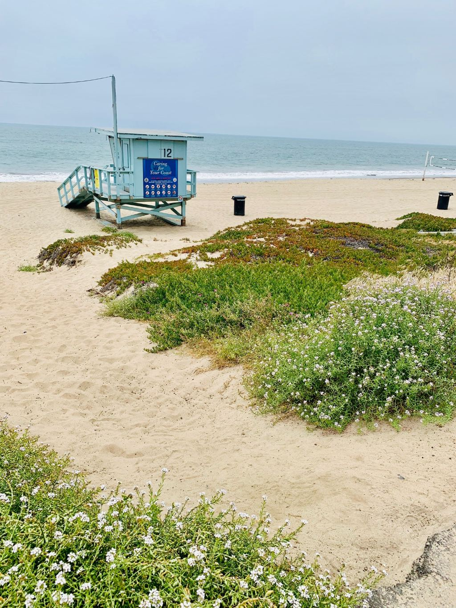
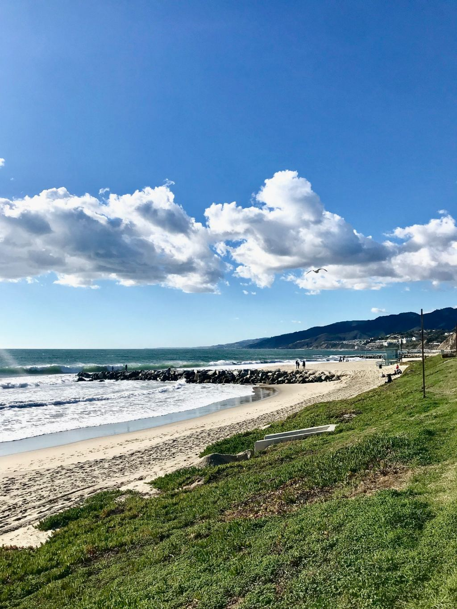
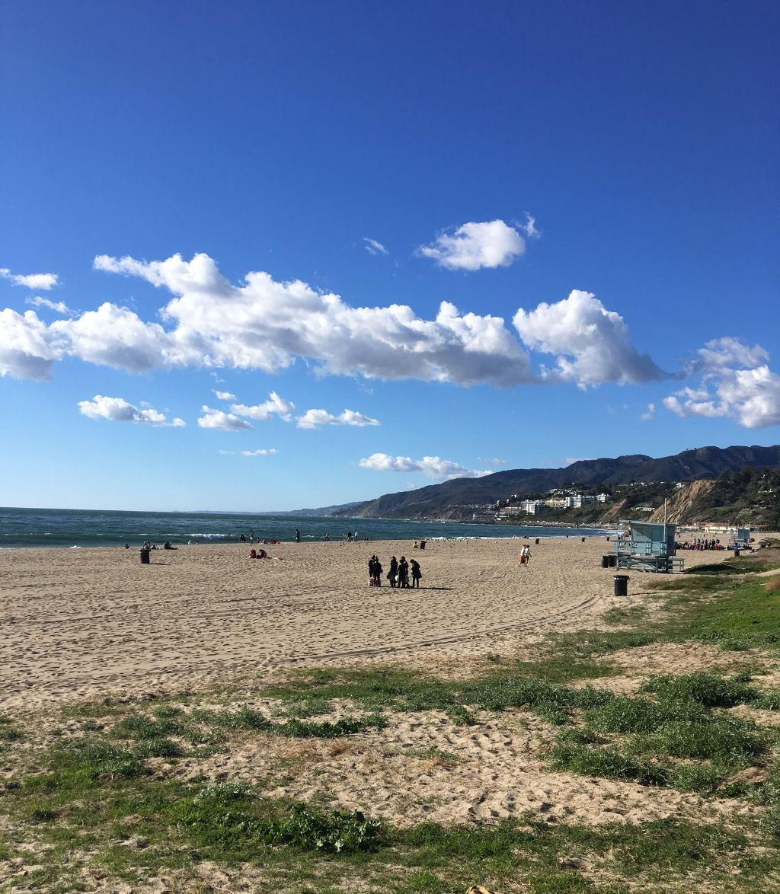
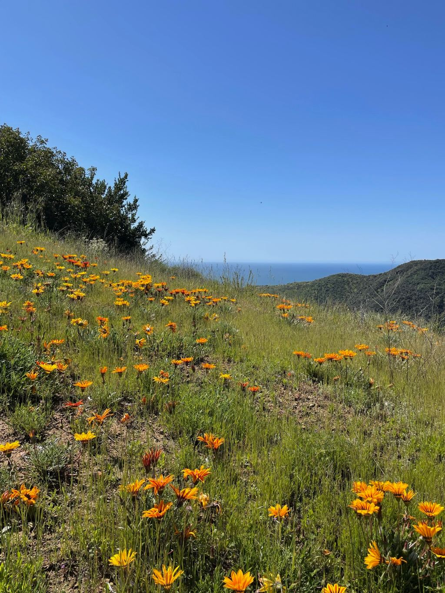

Product Showcase (Prototype / Live App / 2-Min Video)
Current Status: Build 3: Homeward is now a rebuild, sell, or hold decision tool, deploying to Render (live link coming)
The Decide page with example numbers (not real data) for a family whose home burned. It compares selling the lot now, rebuilding and selling in 2029, and rebuilding and staying, and shows the break-even sale price on a scale next to today's value and the chosen recovery speed. All the math runs in the browser; nothing a family types is stored on the server.
![The Homeward Decide page. On the left, example inputs: lot value $2.4M, home value once rebuilt $4.6M, rebuild cost still to pay $1.8M, insurance still coming $900K. On the right, a dark panel says rebuilding and selling in 2029 beats selling the lot now only if the rebuilt home sells for more than $4.24M, with a scale marking that break-even, today's value of $4.60M and a typical-recovery projection of $5.03M. Below, three paths: sell the lot now $2.26M, rebuild then sell $3.28M, rebuild and stay $6.18M, and a chart of projected home value from 2026 to 2036 under slow, typical and fast recovery.](decide-build3.jpg)
Related Resources
See which Palisades homes are being rebuilt on the Pali Post's Rebuild Map, an independent site run by the Palisadian-Post.
View the Pali Post's Rebuild Map →Find mental health support, community recovery groups, and city, county and state services for Palisades fire survivors.
Recovery Resources →Living PRD (Product Requirements Document)
The place we're rebuilding



PRD v3
What changed: Homeward pivoted. It no longer asks families to paste emails from their builder, HOA, insurer or city. I didn't want the product built on other people's and companies' messages, and the question my parents actually ask is about money and timing: rebuild, sell, or hold?
1. Target user and the job to be done
Pacific Palisades homeowners after the January 2025 Palisades fire: families whose home burned (deciding whether to sell the lot, rebuild and sell later, or rebuild and stay) and neighbors whose home survived among empty lots (deciding whether to sell now or hold). Often parents in their 60s or 70s, deciding together with adult children. The job: understand what each path could mean for the family, using their own numbers and an honest picture of how the neighborhood is recovering.
2. Scope and explicit non-goals
- Scenario calculator: sell now, rebuild then sell, or hold, over 10 years, under slow, typical and fast recovery.
- Break-even: the one number that decides between rebuilding and selling, shown on a scale next to the family's own estimate.
- Projection ranges and "what would it take" sliders: recovery speed, cost overruns, insurance premiums, a premium for homes rebuilt to the new fire codes.
- Rebuild-or-sell-the-lot check and family decision mode (each family member rates what matters).
- Recovery pulse: Pacific Palisades damage, rebuild permits, completions, sales and insurance history from public data, as neighborhood totals and a block-by-block grid.
- AI summary in plain language, with questions to ask a CPA or realtor.
- Private share link and printable one-pager.
Non-goals: no single-number price forecasts, no "you should sell," no tax, legal or financial advice, no comparable sales, no accounts, and nothing about individual homes, lots or neighbors.
3. How it works
All the math runs in the browser. What a family types stays on their device; the server stores nothing. The only server call is the AI summary, which receives rounded numbers only, never names or addresses. Neighborhood data comes from public sources, prepared ahead of time by scripts/build_market_data.py and published as neighborhood totals in docs/market-data/: CAL FIRE damage inspections (CC BY), City of Los Angeles building permits (LADBS), HMDA mortgage data, California Department of Insurance policy counts and the FHFA LA-area price index.
Riskiest assumption: that a handful of honest scenarios, tied to the family's own numbers and real recovery data, helps a family decide better rather than giving false confidence. Second risk: people may read projections as predictions, so every range is tied to a stated assumption the user chooses.
Honest limit: the fire was less than two years ago, so price data after it is thin. FHFA publishes no Pacific Palisades ZIP-level prices after 2021, and HMDA leaves out cash purchases. Homeward leans on rebuild progress, damage, insurance signals and the family's own scenarios rather than a price trend.
4. Hosting, database and security (Build 3)
- Hosting: a small Node server on Render (free tier), with this Product Page staying on GitHub Pages.
- Database and sign-in: none. The app saves nothing on the server, so it doesn't need either.
- Security: the OpenRouter key lives only in Render's settings, the AI route is rate-limited per visitor with a daily cap and a size limit, the OpenRouter key has a monthly spending cap, and PostHog masks every input. Details in
SECURITY.md. - Cost per run: the calculator is free. Each AI summary is estimated at a few cents, to be measured on the live app.
PRD v2
Biggest risk: Can the AI reliably catch real contradictions between the HOA, builder, insurer and city, without burying families in false alarms?
How this build tests it: Six fictional email threads in samples/, each written with a known answer recorded in advance in samples/ANSWER_KEY.md. Five have planted conflicts: an HOA and builder reversal chain, the builder vs the city on like-for-like eligibility, an insurer contradicting itself, an HOA fence rule vs the city fire rule, and a builder saying an inspection passed when the city record says it didn't. The sixth has no contradiction and checks for false alarms. One command runs all six through the real AI.
Latest results (Nov 13, 2026):
- Caught: 5 of 5 planted conflicts, each with the right parties and dates.
- Missed: 0.
- False alarms: 0. The clean thread flagged nothing.
- Total flags: 8. Some planted conflicts involve more than one pair of statements, and every flag matches a pair the answer key lists.
How it works: You paste an email thread or letter into the Conflict Tracker, which runs on your own computer. The app sends the text to an AI model through OpenRouter, which pulls out each statement along with who said it, the topic and the date. Homeward compares the new statements with everything saved so far and flags contradictions and reversals, showing both statements side by side with quotes, plus open questions and who to ask. Results are saved in a file on your computer.
Cost per run: About $0.03 per analysis (one email thread), and about $0.20 for the full six-thread sample test ($0.20 on the latest run).
Caveat: All testing so far uses fictional data written with known answers. Real, messier family emails are still the open test.
PRD v1
1. Target User & The Job to Be Done
Who is this for? My parents, a couple in their late 60s rebuilding their Pacific Palisades home after the January 2025 fire. They're in the construction phase, and they manage the rebuild together. My mom keeps the records. My three sisters and I help remotely. They can introduce me to 2-3 neighbor families going through the same process.
Job to be done: Figure out what's actually true and required across every party involved in the rebuild, so they don't act on bad information.
The painful "Before" workflow: Four parties give my parents information that often conflicts: the HOA, the builder, their insurer, and the City of LA. The HOA states a requirement, the builder says they can meet it, then comes back saying they can't or it costs extra, then the HOA says it was wrong. No party checks the plans against the city's process; that falls to my parents. Coverage answers from insurance have to be confirmed and passed to the builder by hand. Every party has given them wrong information at some point, and each time it caused delays. My mom reconciles all of it herself, across email, two portals, and printed folders, for 10-15 hours a week. Families who are less meticulous than she is miss details and go down the wrong road.
The "After" workflow with this product: My parents paste each email thread or letter, in full or just the relevant part, into Homeward. It pulls out every requirement, commitment, and coverage statement, tagged with who said it and when. It keeps a current list of what's true for each topic, such as setbacks, materials, or coverage. When a party contradicts itself or another party, Homeward flags it and shows both statements side by side with sources. The City of LA is treated as a party like the others, so its permit letters and plan-check comments are added the same way, and Homeward flags when the builder or HOA contradicts what the city said. It also lists the open questions to resolve, and who to ask.
2. Scope & Explicit Non-Goals
- In Scope (Core Workflow): Add a message → Homeward extracts claims by party, topic, and date → compares against earlier claims → flags contradictions and reversals → lists open questions.
- Out of Scope #1: No legal, insurance, or construction advice. Homeward flags conflicts between what parties said. It never decides who is right or what the family should do.
- Out of Scope #2: No sending messages. It doesn't email the HOA, builder, insurer, or city on the family's behalf.
- Out of Scope #3: No built-in database of city or county rules in v1. It only compares what the parties themselves said. The design is party-based, not Palisades-specific, so it can work for other wildfires and disasters later.
3. How It Works Under the Hood & Riskiest Assumption (Week 2+)
Riskiest Assumption: The AI can reliably catch real contradictions in messy, real-world emails, including ones my mom caught by hand, without burying families in false alarms.
Second risk: Families will trust Homeward enough to paste their real messages. Privacy concerns may limit what they share.
Simple Architecture: [Pasted email / letter] → [Local web app] → [AI model] → [Structured claims + conflict flags]
A local web app running on my laptop. The user pastes text from an email or letter. An AI model reads it and returns structured claims (party, topic, statement, date). Claims are saved locally. On each new message, the model compares new claims against saved ones and flags conflicts. Real family documents stay in a private/ folder that git ignores and are never committed. The API key lives in .env.
Privacy: Homeward runs locally with no account, and saved data stays on the family’s computer. Text you analyze is sent to an AI provider through OpenRouter. This site uses PostHog analytics to count visits and clicks; text you type into the Conflict Tracker is not recorded. Planned: on-device cleanup that strips signatures and repeated replies, and redaction that replaces names and policy numbers with role labels like [HOA rep], with a summary preview before anything is sent to a zero-retention AI provider.
4. Unit Economics & Analytics Snapshot (Updated Weekly)

Weekly Build Log
Build 1 · Intent.md & Throwaway Prototype (Due Nov 9)
- What shipped: PRD v1 for Homeward, live on this page. Set up Git, GitHub, GitHub Pages, Claude Code, and a PostHog account. Added a private/ folder to .gitignore so real family documents can never be committed. Built a working local prototype: paste an email thread, and it extracts each party's claims, flags contradictions side by side, and lists open questions and who to ask (Build 1 screenshot replaced by the Build 2 one above). Tested on six sample threads, it caught 5 of 5 planted conflicts with 0 false alarms, for $0.20 in AI costs. The samples are synthetic and written with known answers, so real, messy emails are still the open test.
- Things learned with AI: The terminal and the agent both take you literally. In Terminus,
cd ..cryptfailed because of one missing slash, andrmdeletes with no undo. Installing Claude Code through npm failed with a permissions error. Instead of forcing it with sudo, I used the native installer and fixed my PATH. Having Claude propose a plan and wait for approval before editing caught mistakes before they happened, like flagging that "builder" and "developer" were used inconsistently, and that private/ wasn't actually ignored yet. I also learned that moving a repo into an org can cost you admin rights, which blocked GitHub Pages until the instructor fixed it. - What broke / changed in PRD: I explored several ideas (new parents, egg freezing, recruiting tools) before landing on my family's wildfire rebuild, the problem I have real access to. I dropped a receipts and insurance-recovery angle because it didn't match where my parents are in the process. I narrowed the core job to one thing: finding the truth when the HOA, builder, insurer, and city contradict each other. I widened input from line-by-line pasting to whole email threads, since pasting line by line was too manual. I added a privacy plan and a second risk (will families trust it with real messages?), and removed details that could identify my family.
- Cost & time this week: $0.26 · 7 hours
Build 2 · Smallest Local Version & PostHog (Due Nov 16)
- What shipped: A Business Directory of 36 Palisades-area businesses, grouped by area with a status filter, source links and directions, and a Recovery Resources page with 988 crisis support first. A redesign of every page around my own photos, with a palette pulled from them, self-hosted fonts so pages never contact Google, and a shared nav. The local app now serves the Directory and Resources pages from the same files as this site. Route tests (
npm test) check that nothing private, like saved claims or the API key, can be reached. PostHog analytics on every page: session replay with all inputs masked, the thread box and results never recorded, and custom events (thread_analyzed,conflict_flagged) that send only counts and party roles. PRD v2 is above. On the six fictional sample threads, the AI caught 5 of 5 planted conflicts with 0 false alarms. - Things learned with AI: Checking the real result catches what tests miss. Passing tests didn’t show a stretched screenshot, a nav cut off on phones, or that PostHog was quietly dropping every event; looking at the pages in a browser did. Asking for a plan before multi-file changes kept surfacing decisions I needed to make, like which group three Palisades Highlands businesses belonged in, and keeping the directory’s file name so links don’t break. Accuracy needs some attention: for example, dates shown as “May 1, 2025” when the source only said May, businesses in Santa Monica Canyon labeled as Pacific Palisades, and statuses from 2025 presented as current all had to be fixed.
- What broke / changed in PRD: The map's data folder was
docs/data/, which the.gitignorerule for private claims also blocked, so the map would have loaded nothing on GitHub Pages; I moved it todocs/map-data/. OpenStreetMap's Nominatim couldn't place some addresses: the Palisades Village shopping center needed hand-entered coordinates, and a few businesses could only be listed below the map. Google Fonts would have sent every visitor's browser to Google, so I self-hosted the font. Map pins, licensing and imprecise addresses added more risk than value, so I replaced the map with a simple directory. A typo in the PostHog project key made PostHog reject every event until I checked the key directly. PRD v2 adds the risk test, its results, and cost per run. - Cost & time this week: $0.24 · 5 hours
Build 3 · Build.exe: The Core Workflow (Due Nov 23)
- What shipped: [End-to-end workflow working with real inputs + PostHog funnel events]
- What broke / changed in PRD: [Fill in]
- Cost & time this week: $[0.00] · [0] hours
Build 4 · Test.py: Choose Track A or Track B (Due Nov 30)
- Chosen track: [A: 10-case domain eval and one outside target-user review; OR B: 3–5 outside users and replay findings]
- Results and improvements: [Before/after evidence; for Track B, fixes to the top three friction points]
- PRD v4 changes: [What the evidence changed]
- Cost & time this week: $[0.00] · [0] hours
Build 5 · Ship.installer: Launch Ops, Rollback Check & 2-Min Video (Due Dec 7)
- Launch Ops & Safety: [Verified no exposed keys, set spend cap, tested 2-minute rollback]
- 2-Minute Video & Final Polish: [Link/embed above]
- Cost & time this week: $[0.00] · [0] hours